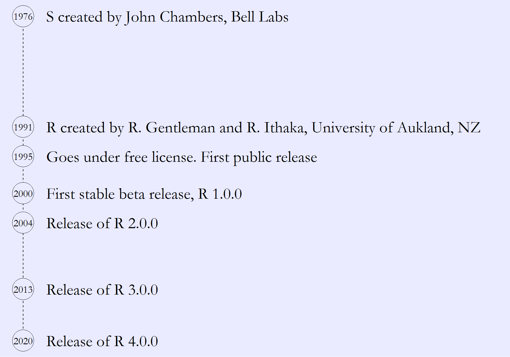
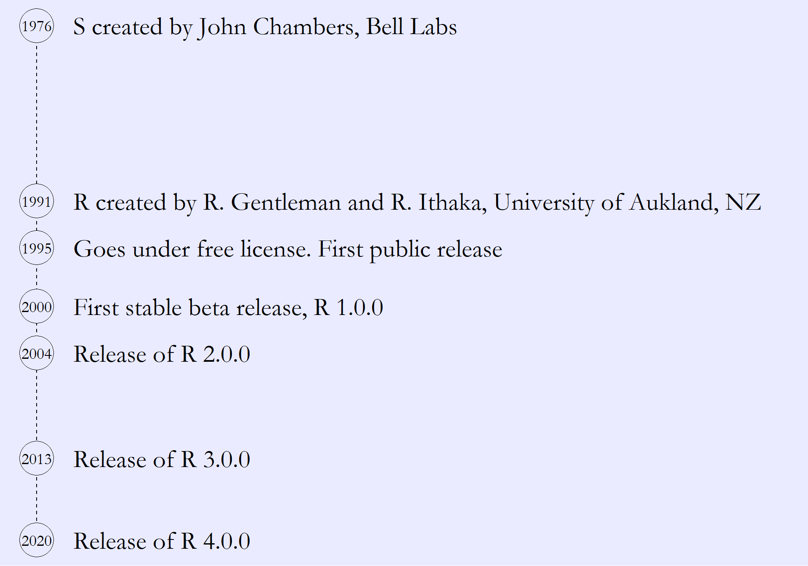

Session 1: Introduction to R
A seminar series on fundamentals
Organised by SLUBI and Statistics at SLU
Presentation of background and a practical exercise
Upcoming topics
Topic suggestions are welcome
SLUBI
Statistics at SLU
R & RStudio
Data handling
Plotting
Some RStudio features
Troubleshooting
Exercise session

Open software used for statistical analysis
Code-based interface
R itself is the programming language
The installation of the language comes with a basic interface
Most users work in more advanced interfaces, the most common of which is RStudio
R. https://www.r-project.org/
CRAN in left frame > Select any mirror > Select depending on operating system
RStudio. https://posit.co/
Products > Select open version > Select RStudio Desktop > Select free version
R is extended by creating new functions
Collections of functions are called packages
The basic installation comes with a set of packages
New packages can be installed from CRAN (the Comprehensive R Archive Network)
In R, information is stored as named objects
Objects are stored by writing a name followed by the assign arrow <-
Objects can be very simple, like a single number
A bit more complex, like a vector (an ordered sequence of numbers)
And more complex still, like a collection of vectors in a data frame
Objects are created and changed using functions
Function take some input and produce an output
Functions typically have a set of arguments, allowing the user to control its behaviour
Called using the function name followed by the input and arguments in brackets
The output of a function can be printed directly or stored as a new object
NA is used for missing values
Many different ways to structure code with several steps
Simple example: (i) given a vector, (ii) transform with the logarithm, (iii) take the sum.
Base R and add-on packages include multiple functions to import data
The specific choice of function depends on the data type
The file path can be specified relative a working directory - the base folder of the current R session
# A tibble: 2,266 × 7
titleId seasonNumber title date av_rating share genres
<chr> <dbl> <chr> <dttm> <dbl> <dbl> <chr>
1 tt2879552 1 11.22.63 2016-03-10 00:00:00 8.49 0.51 Drama…
2 tt3148266 1 12 Monkeys 2015-02-27 00:00:00 8.34 0.46 Adven…
3 tt3148266 2 12 Monkeys 2016-05-30 00:00:00 8.82 0.25 Adven…
4 tt3148266 3 12 Monkeys 2017-05-19 00:00:00 9.04 0.19 Adven…
5 tt3148266 4 12 Monkeys 2018-06-26 00:00:00 9.14 0.38 Adven…
6 tt1837492 1 13 Reasons… 2017-03-31 00:00:00 8.44 2.38 Drama…
7 tt1837492 2 13 Reasons… 2018-05-18 00:00:00 7.51 2.19 Drama…
8 tt0285331 1 24 2002-02-16 00:00:00 8.56 6.67 Actio…
9 tt0285331 2 24 2003-02-09 00:00:00 8.70 7.13 Actio…
10 tt0285331 3 24 2004-02-09 00:00:00 8.72 5.88 Actio…
# ℹ 2,256 more rowsColumns can be transformed or added by using functions on existing columns
$ and the assign arrow <-mutateNote that we still have to assign in order to store the new data frame
Selecting takes a subset of columns
The show names are in the third column, called title
$ and the name[] and an indexselectFiltering takes a subset of rows
We pick out seasons with an average rating (av_rating) above 9
[] and a logical statementfilterSorting gives a re-ordering of the data
We order by average rating
[] and orderNote the use the argument decreasing to get the highest ratings first
arrangeNote the use of - to get the highest rating first
dat_tv %>% # Take the TV data, then ...
filter(title == "Midsomer Murders") %>% # filter for title being Midsomer Murders, then ...
arrange(-av_rating) %>% # sort by average rating in decreasing order, then ...
select(title, seasonNumber, av_rating, genres) # select a subset of columns# A tibble: 19 × 4
title seasonNumber av_rating genres
<chr> <dbl> <dbl> <chr>
1 Midsomer Murders 2 7.92 Crime,Drama,Mystery
2 Midsomer Murders 3 7.76 Crime,Drama,Mystery
3 Midsomer Murders 9 7.74 Crime,Drama,Mystery
4 Midsomer Murders 1 7.73 Crime,Drama,Mystery
5 Midsomer Murders 5 7.66 Crime,Drama,Mystery
6 Midsomer Murders 6 7.63 Crime,Drama,Mystery
7 Midsomer Murders 7 7.63 Crime,Drama,Mystery
8 Midsomer Murders 12 7.61 Crime,Drama,Mystery
9 Midsomer Murders 16 7.59 Crime,Drama,Mystery
10 Midsomer Murders 17 7.54 Crime,Drama,Mystery
11 Midsomer Murders 4 7.53 Crime,Drama,Mystery
12 Midsomer Murders 10 7.51 Crime,Drama,Mystery
13 Midsomer Murders 11 7.44 Crime,Drama,Mystery
14 Midsomer Murders 8 7.41 Crime,Drama,Mystery
15 Midsomer Murders 19 7.39 Crime,Drama,Mystery
16 Midsomer Murders 15 7.33 Crime,Drama,Mystery
17 Midsomer Murders 14 7.32 Crime,Drama,Mystery
18 Midsomer Murders 13 7.29 Crime,Drama,Mystery
19 Midsomer Murders 18 7.17 Crime,Drama,MysteryAggregating calculates a summary value over a subset of values
We calculate mean rating across seasons
aggregate functiongroup_by and summarise# A tibble: 868 × 2
title mean_rating
<chr> <dbl>
1 11.22.63 8.49
2 12 Monkeys 8.83
3 13 Reasons Why 7.97
4 24 8.58
5 24: Legacy 7.20
6 24: Live Another Day 8.90
7 39814 8.27
8 666 Park Avenue 7.47
9 7th Heaven 7
10 8 Simple Rules 8.17
# ℹ 858 more rowsSingle vectors have a mode
In a data frame, each column has a mode
A column getting the wrong mode is a common import error
There are functions to change the mode
# A tibble: 3 × 2
a b
<chr> <chr>
1 1 Alice
2 2 Bob
3 3 CarlaThe mode can also be specified in most import functions
Base R includes functions to make plots
Highly customizable
Can add elements using functions like points(), lines() and text()
ggplot2Many packages extend the plotting functionality, most notably ggplot2
Variables are specified in a special aes() function (aestethics)
Plot elements are added as geoms (geometries)
The RStudio window is divided into several frames
Code is run in the Console frame
One usually writes code in a script (a separate text file)
File > New file > R Script
Lines from the script are run in the console by clicking the Run button or ctrl + enter
Scripts are saved with the file extention .R, but are just basic text files which can be opened in any text editor
Divide into sections and comment specific rows using #
File > New project…
Creates a new folder for storing scripts, data, and output
Keeps the material contained, making it easier to keep track of changes and to share
Opening the project automatically sets the working directory to the project folder
Perfect to keep track of scripts written during a course
R does not read empty space
Divide into several steps and add spaces and line breaks to make readable code
is more readable than
RMarkdown and Quarto allows one to mix written text and R code
The file can then be rendered into some standard format
File > New file > R Markdown… or Quarto Document…, then select file type
Possible output file types include html, pdf, and word
Every function has a help page
Either search in the Help frame in RStudio or run ?function_name
Always read error messages carefully
Use Google and Stack Overflow
R website: http://r-project.org
RStudio website: https://posit.co/
RStudio cheat sheets: https://posit.co/resources/cheatsheets/
Grolemund & Wickham, R for Data Science, https://r4ds.had.co.nz/
Wickham, Navarro & Pedersen, https://ggplot2-book.org/
The End. Stick around for practical exercise